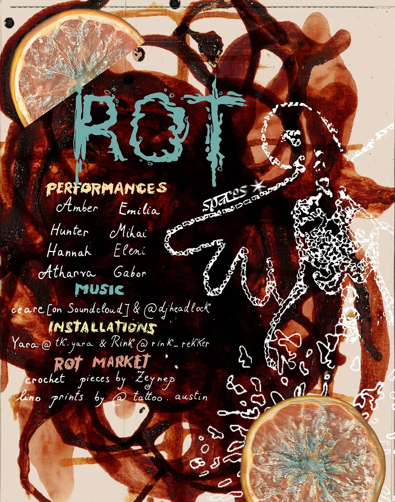
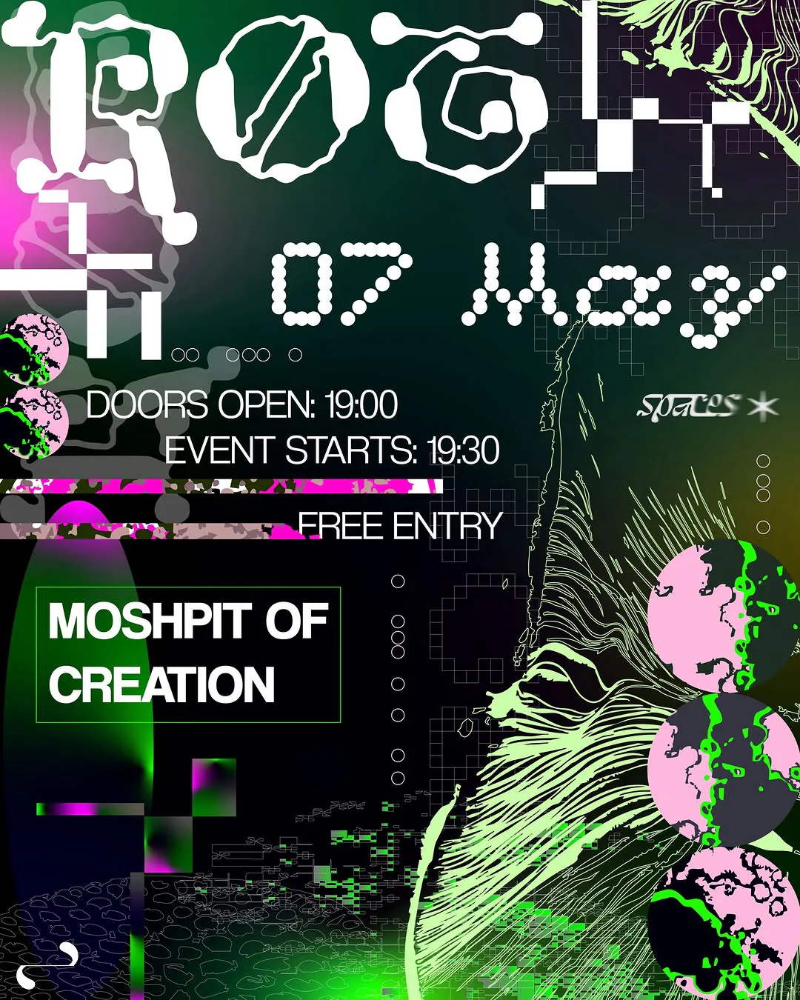

ROT
Performance (G.C.P.S.S.M.)
What is rotting beside you? Here's a peek into tonight and the thoughts of some performers. How do we celebrate the revolving? How do we give back to our One Mother Earth?
⫘⫘The dust of your bones will far outlive your name⫘⫘The fruit on your counter knows⫘⫘The chestnut leaves on wet autumn floors know⫘Eventually, so will you⫘⫘
We're inviting you to ROT – an evening of poetry, music, and art about something that unites us all. The (brain)rot of algorithms feeding on the last of your serotonin. The social rot of misdeeds we've stopped noticing. And the organic rot, through which everything that has ever lived gives itself back.
⫘⫘Rot isn't decay. It's a replacing. The mass stays; something else moves in⫘
Performed the gesture-controlled slow music without the visuals this time.

